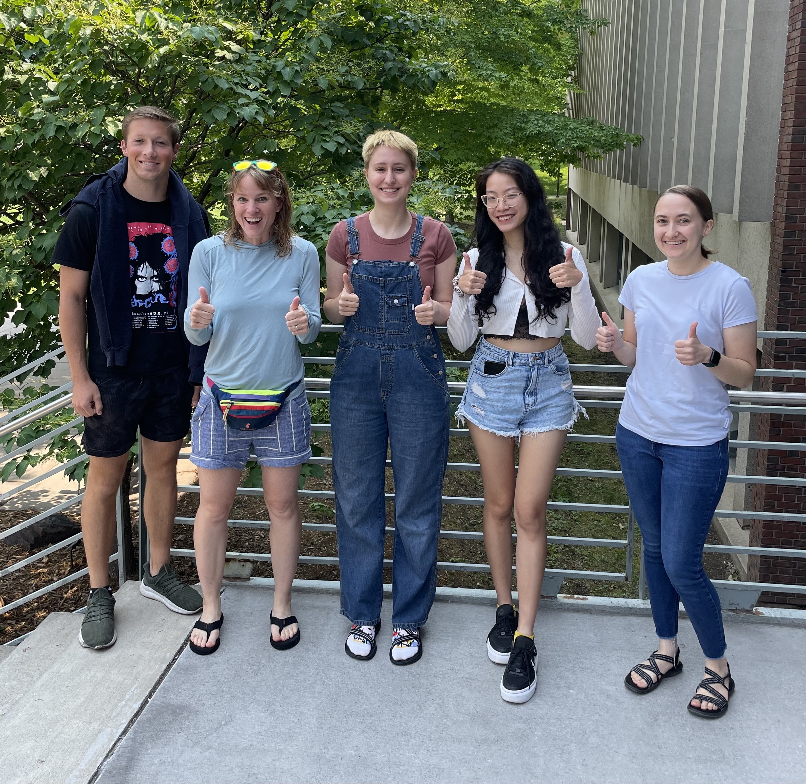
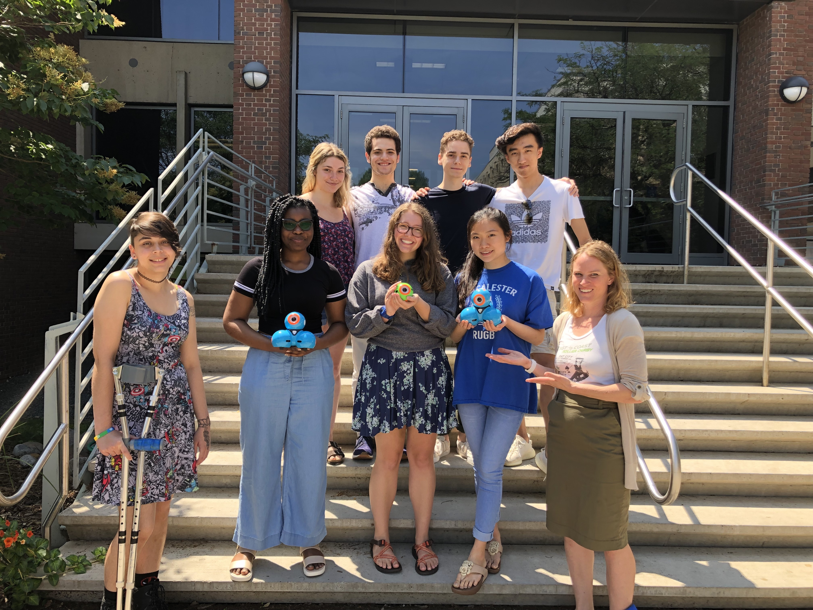

Blocks4all started as a dissertation project by Lauren Milne at the University of Washington exploring how to make block-based programming environments more accessible for children with visual impairments. Now an assistant professor at Macalester College, she has continued work on it with the help of some awesome students! Check out this video showcasing the original project!
Publications on Blocks4All include:
- Jacqueline Shao Yi Ong**, Nana Adwoa O. Amoah**, Alison E. Garrett-Engele**, Mariella Irene Page**, Katherine R. McCarthy*, and Lauren R. Milne. 2019. Demo: Expanding Blocks4All with Variables and Functions. In Proceedings of the 21st International ACM SIGACCESS Conference on Computers and Accessibility (ASSETS '19). ACM, New York, NY, USA. (** Macalester Student)
- Lauren R. Milne, Richard E. Lander. 2019. Position Paper: Accessible Block-Based Programming: Why and How. In Proceedings of the IEEE 2019 Blocks and Beyond Workshop. IEEE Computer Society, USA.
- Lauren R. Milne, Richard E. Lander. 2019. Blocks4All: Making Blocks-Based Programming Languages Accessible for Children with Visual Impairments. In Proceedings of the 50th ACM technical symposium on Computer Science Education (SIGCSE '19). ACM, New York, NY, USA.
- Lauren R. Milne, and Richard E. Ladner. 2018. Blocks4All: Overcoming Accessibility Barriers to Blocks Programming for Children with Visual Impairments. In Proceedings of the ACM Conference on human factors in computing systems (CHI ‘18). ACM, New York, NY, USA. (PDF)
- Lauren R. Milne, Catherine M. Baker, Richard E. Ladner. 2017. Blocks4All Demonstration: a Blocks-Based Programming Environment for Blind Children. In Proceedings of the 19th International ACM SIGACCESS Conference on Computers and Accessibility (ASSETS '17). ACM, New York, NY, USA.
Summer 2023 research group, Macalester College

From left to right: Kyle Suelflow, Lauren Milne, Lucy Rubin, (Avianna) Hien Anh Bui, Miri Leonard (not pictured: Anh Nguyen, Cecelia Kaufmann)
Summer 2021 researchers:
Haris Ahmed, Amanda Jackson, Tianrui Liu, Arun Mankoff Dey, James Yang, Jonas Costa, Amy Xu
Summer 2019 research group, Macalester College

From left to right: Mariella Page, Nana Amoah, Alison Garrett-Engele, Logan Caraco, Katherine McCarthy, Sebastian Deibel, Jacqueline Shao Yi Ong, Yufan Ma, Lauren Milne